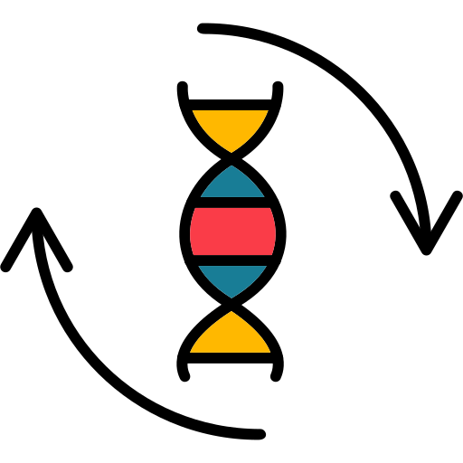
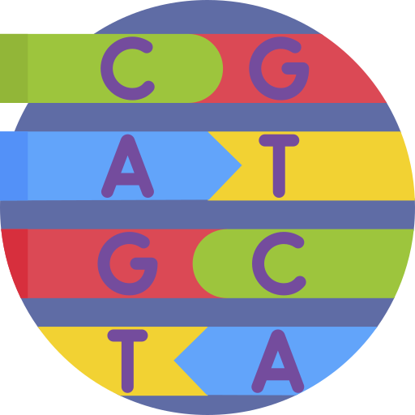
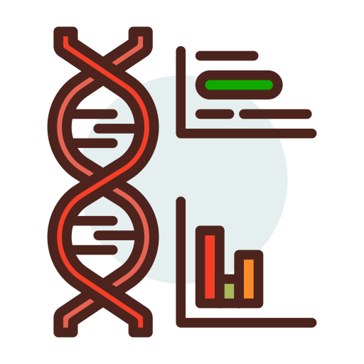
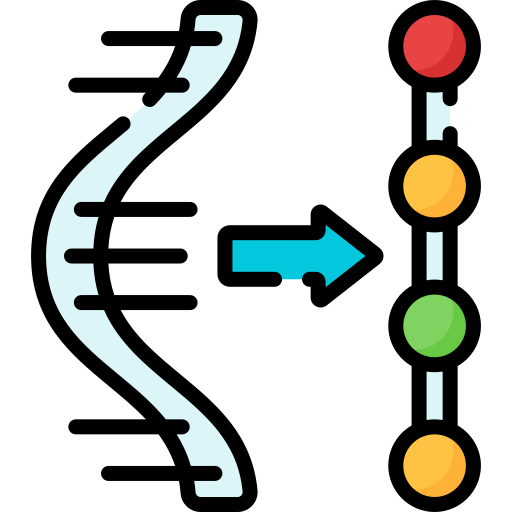
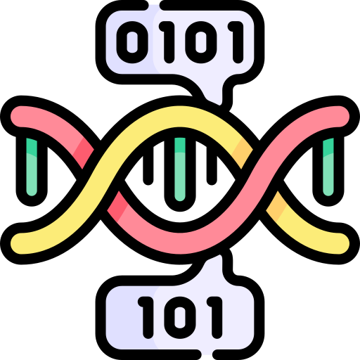

Bienvenue à Bioinformatique.ca
Quelle excitante découverte allez-vous faire aujourd'hui?

Générer le Reverse complément d'une séquence
 Trouver les sites d'hybridation d'une amorce
 Trouver la prévalence de chaque codon dans une séquence
 Traduire une séquence de nucléotides en acides aminés
Changer la nomenclature d'acides aminés (1 lettre à 3 lettres)
 Trouver le gène codant pour une protéine dans une séquence d'ADN